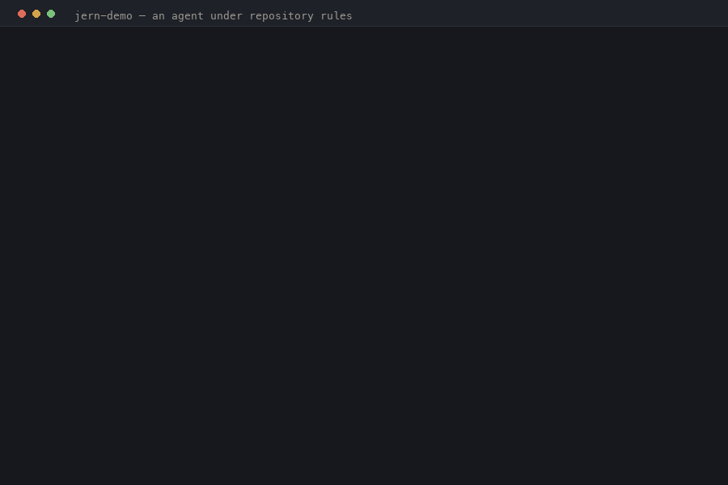

Anthropic, OpenAI, Ollama, or any OpenAI-compatible endpoint, with streaming and git-safe edits.
Apache-2.0 agent runtime
The coding agent you can govern.
Rules your repository enforces, budgets that are walls, and a byte-exact record of every run. Read the loop, change it, replay it offline, and test its behavior like code.

Real output from the public demo repository. The policy and replay checks run offline without calling a model.
Use · govern · edit · test
Scope edits, allow commands, deny tools, and compose protected restrictions that later layers cannot weaken.
The agent loop is readable IronKernel source. Change the control flow without recompiling the host.
Replay recorded model and tool effects byte-exactly and assert properties of the entire trajectory.
Install
$ curl -fsSL https://jern.ai/install.sh | sh
$ export ANTHROPIC_API_KEY=…
$ jern run "fix the failing test"
$ jern policy
$ jern receipt --mdWhy the runtime matters
Agent code runs in a capability environment with no ambient file, process, network, or model authority. Every effect crosses the handler stack where policy, approvals, budgets, and tracing apply. Process-level tools still require an honest OS-sandbox and approval story; the security model documents the boundary and its limits.